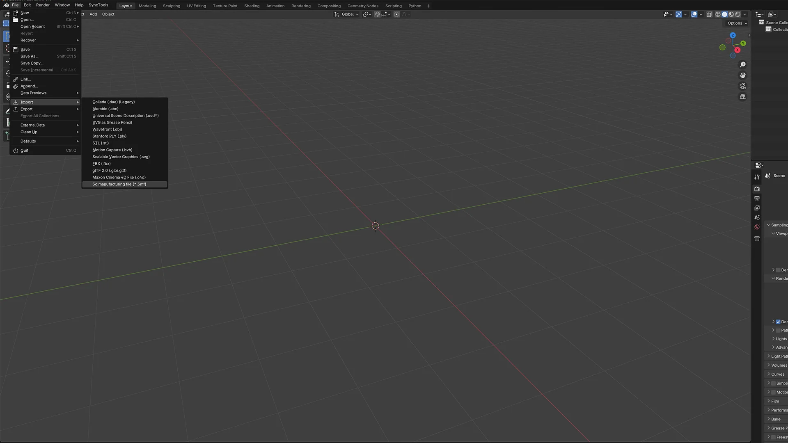
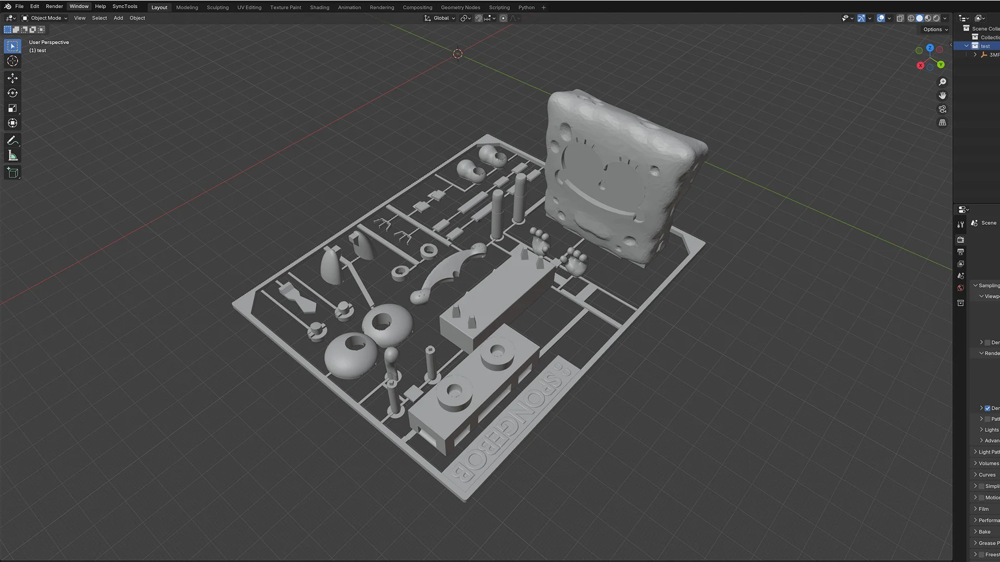

导入-导出 3d Manufacturing 文件(.3mf)
一款专业级的导入导出插件，用于在 Blender 中处理 3D 制造格式（3MF）文件。该插件弥合了 Blender 和 3D 打印软件之间的差距，提供无缝的工作流集成，适用于 3D 打印项目。


主要功能
导入功能
- 智能对象处理：导入 3MF 文件，完整保留对象层级结构。
- 合并选项：可选将所有对象合并为单个网格。
- 变换支持：精确处理对象变换和组件。
- 集合整理：自动将导入的对象整理到集合中。
导出功能
- 选择性导出：可选择导出选中对象或整个场景。
- 修改器支持：可选在导出时应用修改器。
- 世界空间坐标：精确保留位置和缩放。
- 标准合规：完全符合 3MF 规范。
技术规格
- 兼容 Blender 3.0 及以上版本。
- 支持所有主流操作系统（Windows、macOS、Linux）。
- 轻量级，针对性能进行了优化。
- 定期更新与维护。
应用场景
面向 3D 打印专业人士
- 与 3D 打印软件的直接工作流集成。
- 保持精确的对象定位和缩放。
- 高效处理复杂的多部件模型。
面向 3D 艺术家
- 轻松导出模型用于 3D 打印。
- 保留模型层级与结构。
- 在不同 3D 应用程序之间的可靠传输。
面向产品设计师
- 简化原型设计工作流程。
- 精确的尺寸控制。
- 高效批量处理多个对象。
技术详情
导入 Features
- 完全支持 3MF 文件结构。
- 命名空间处理以确保兼容性。
- 组件引用解析。
- 变换矩阵支持。
- 顶点和三角面数据保留。
- 可选网格合并功能。
导出功能
- 完全符合 3MF 规范。
- 正确的 XML 结构生成。
- 关系处理。
- 内容类型管理。
- 世界空间变换支持。
- 修改器堆栈集成。
安装与使用
简单安装
- 下载插件。
- 打开 Blender 偏好设置。
- 通过插件部分进行安装。
- 启用插件。
简单的工作流
- 导入: 文件 > 导入 > 3D Manufacturing 文件 (*.3mf)
- 导出: 文件 > 导出 > 3D Manufacturing 文件 (*.3mf)
支持与更新
- 定期维护更新。
- 错误修复支持。
- 技术文档。
- 问题邮件支持。
需求
- Blender 3.0 或更新版本。
- 64 位操作系统。
- 基本的 Blender 知识。
定价
[此处为定价策略]
为什么选择这个插件？
- 专业级实现。
- 优化性能。
- 定期更新。
- 技术支持。
- 工作流效率提升。
致客户
此插件持续维护和更新。欢迎您的反馈和建议，这将帮助为所有人改进产品。
支持 Blender 基金会
我们相信应当回馈让我们的工作成为可能的社区。 每个月，我们将插件收入的一部分用于支持 Blender 基金会。 感谢您帮助我们为开源创意的未来做出贡献。